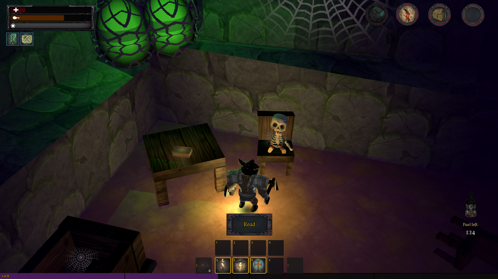
Core Fantasy
Dungeon Crawling
Ancient crypts reward the bold — and punish the unprepared.
Delve for gear, oil, and loot while the dark presses in. Your lantern is the key: keep it lit and fueled to hold the darkness at bay, move with confidence, and push deeper. Let the flame die, and the crypt turns against you.
- Light and fuel matter as much as steel
- High-risk loot runs between siege nights
- Crypts, mines, and forgotten places to purge
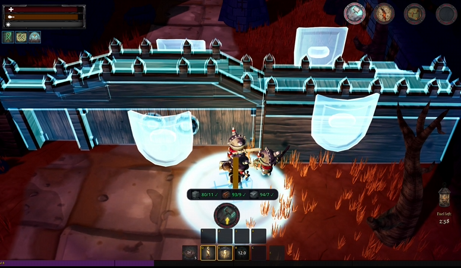
Tower Defense
Village Defense
The Village Cross is the heart of the settlement. If it falls, so do you.
Between expeditions, reinforce walls, place defenses, and stand the line when the horde marches. Siege nights turn preparation into survival — every plank and blade you earned in the wild pays off at the gates.
- Fortify chokepoints and palisades
- Hold the Cross through waves of attackers
- Your village is the hub between every risk
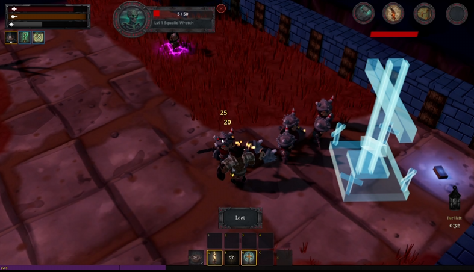
Campaign Rhythm
Seven-Day Cycle
Each week is a clock. Daylight for work. Night for reckoning.
Plan your days around gathering, crafting, cooking, and dungeon runs — then face the pressure as the week closes and the siege intensifies. Survive the cycle, reset the board, and push harder into the next week.
- A readable weekly loop of prep and payoff
- Rising threat that rewards smart planning
- Every day spent poorly is felt at the walls
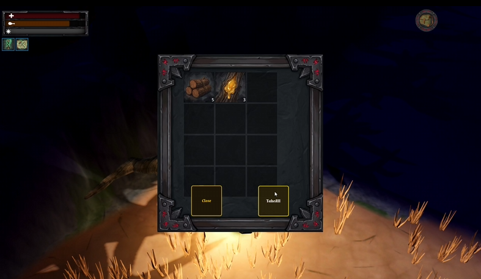
Survival Loop
Gathering Resources
The wilds feed the village — wood, stone, herbs, and salvage.
Scavenge the overworld between crises. What you haul back becomes walls, weapons, oil, and meals. Gathering is not busywork; it is the quiet half of every siege you will later win.
- Forage and harvest across the region
- Stockpile for craft benches and defenses
- Risk routes that pay for the next night
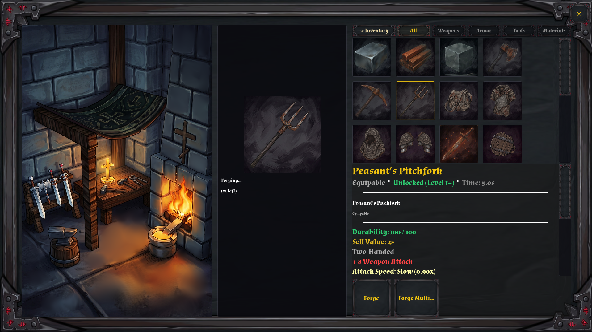
Progression
Crafting
Turn salvage into steel at the workbench and forge.
Craft weapons, armor, tools, and lantern oil. Upgrade your loadout so the next crypt — and the next siege — does not end the same way. Stations in the village turn raw materials into lasting power.
- Blacksmith and crafting stations
- Gear and utility items from recipes
- Fuel and tools that enable deeper runs
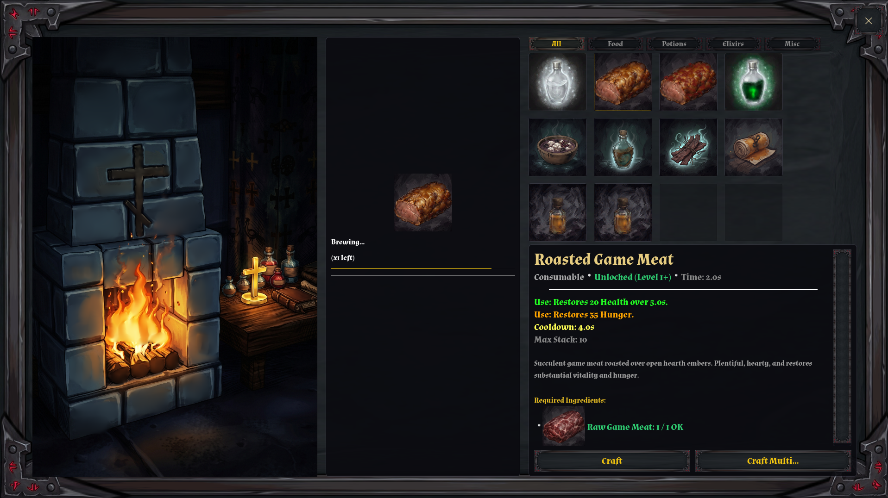
Sustenance
Cooking
A full belly is a quiet advantage before the horns sound.
Cook rations at the station or hearth. Meals keep you in the fight through long dungeon delves and brutal defense nights — another layer of prep that separates survivors from corpses at the Cross.
- Turn ingredients into lasting buffs and recovery
- Prep food as part of the weekly plan
- Survive longer in crypt and courtyard alike
Progression Trees
Skill System
Three paths. One Hermit. Spend skill points where the week will break you first.
Every tree mixes active and passive ranks — Faith-cost powers with cooldowns beside lasting disciplines. Invest deep for mastery, or split points across combat, the walls, and the wilds. The dark does not wait for a perfect build.
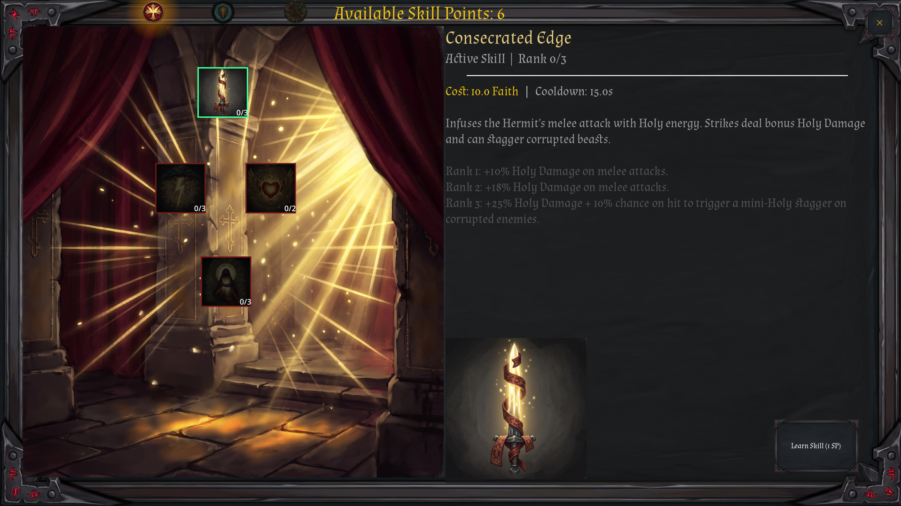
Path of Faith
Faith
Holy steel against corruption.
Actives burn Faith to anoint your blade, call lightning, and stagger beasts that fear the light — ranks like Consecrated Edge turning every melee hit into a sacred reckoning.
- Active holy combat with Faith cost and cooldowns
- Bonus Holy Damage and stagger on corrupted foes
- Rank up skills to deepen the light in the crypt
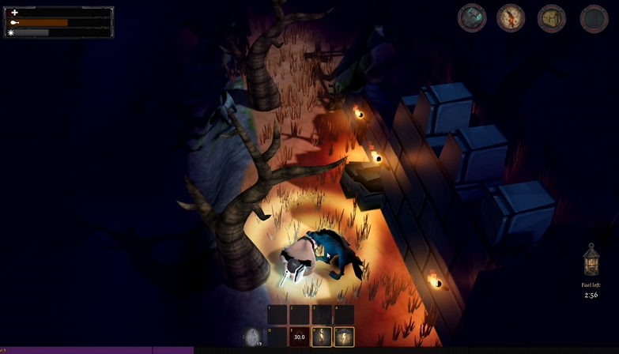
Faith is not a menu choice — it is steel and light when the dark closes in.
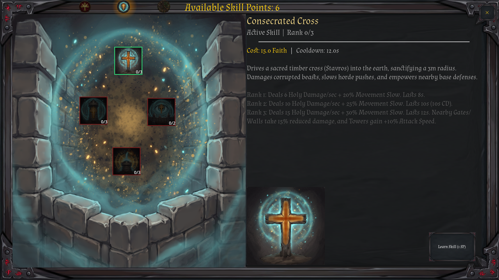
Path of Defence
Defence
The Cross is held with more than timber.
Drive sacred ground into the earth, slow the horde, and harden gates, walls, and towers — powers like Consecrated Cross that turn a siege night into consecrated ground.
- Sanctify zones that damage and slow the push
- Empower nearby Gates, Walls, and Towers
- Spend points where the courtyard will be tested
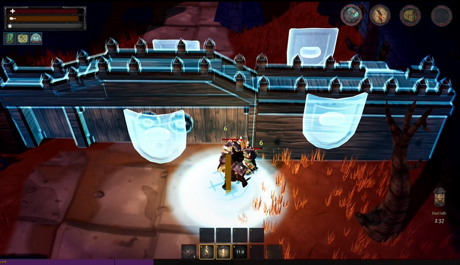
Defence spends itself at the timber line — wards on the walls when the push arrives.
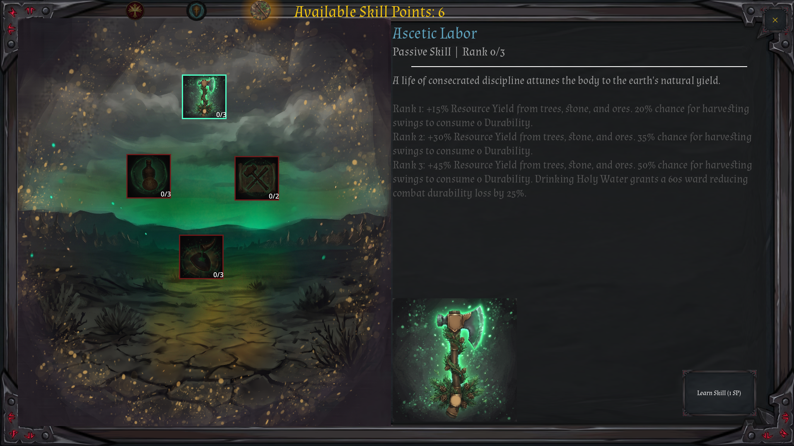
Path of Survival
Survival
Discipline feeds the village.
Passives like Ascetic Labor raise yield from trees, stone, and ore, spare tool durability, and let Holy Water ward your gear — so the week’s gathering actually pays for the next siege.
- Higher resource yield from the wilds
- Harvest swings that spare tool durability
- Endurance wards that keep you in the fight
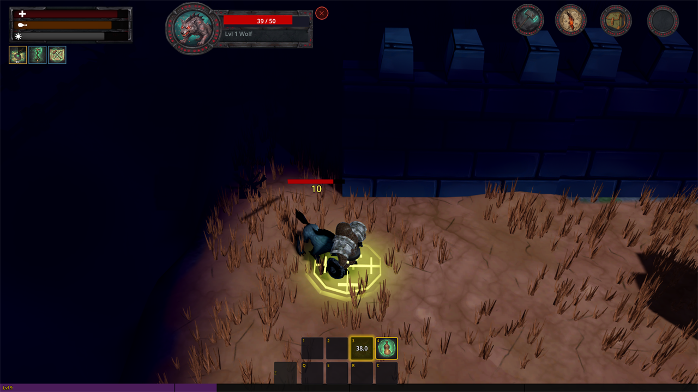
Survival carries into the fight — the week’s discipline still on you when the wolves come.
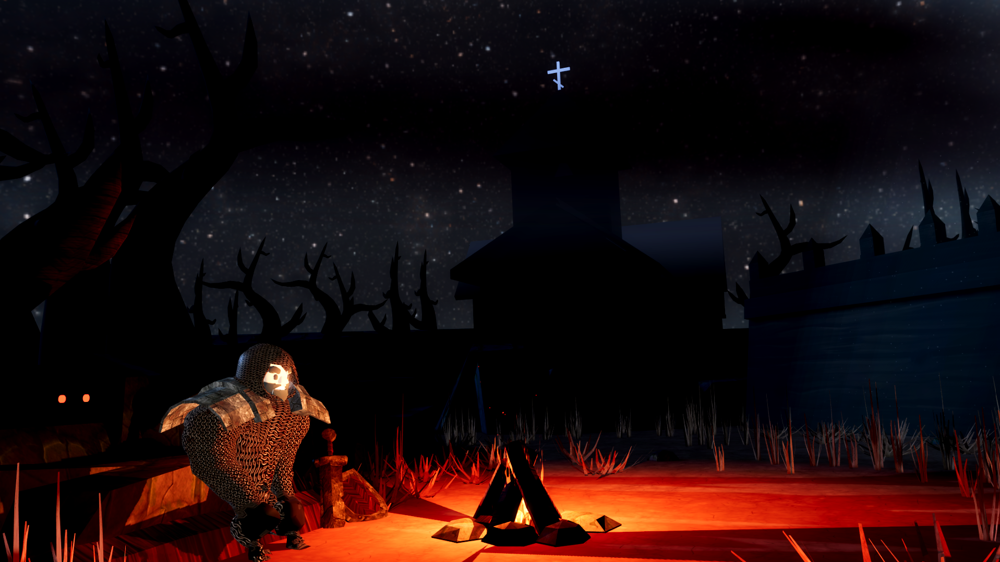
The Heart of the Game
A Note on the Creed Behind the Steel
This game was forged on an uncompromising premise: gaming should call the player to strength, not coddle them with hollow distractions.
In an era where conviction has been watered down and struggle is treated as an inconvenience, I set out to build an experience grounded in timeless weight. A world where honor is not an aesthetic, but a duty; where masculinity means carrying the burden, protecting the sanctuary, and standing unbroken between your people and the creeping dark.
Here, there are no shortcuts, no cynical commentary, and no apologies for revering tradition, holy sacrifice, and the enduring spirit of the warrior. Every system—from the friction of survival to the blood-bought defense of your walls—demands respect, discipline, and unwavering resolve.
Victory is not handed out; it is carved from stone and fire. If you still believe in courage, faith, and the will to hold the line against impossible odds, your vigil begins here.
The week begins again
Wishlist Red Toll on Steam when it launches — dark fantasy survival, low-poly grit, and a village that must not fall.